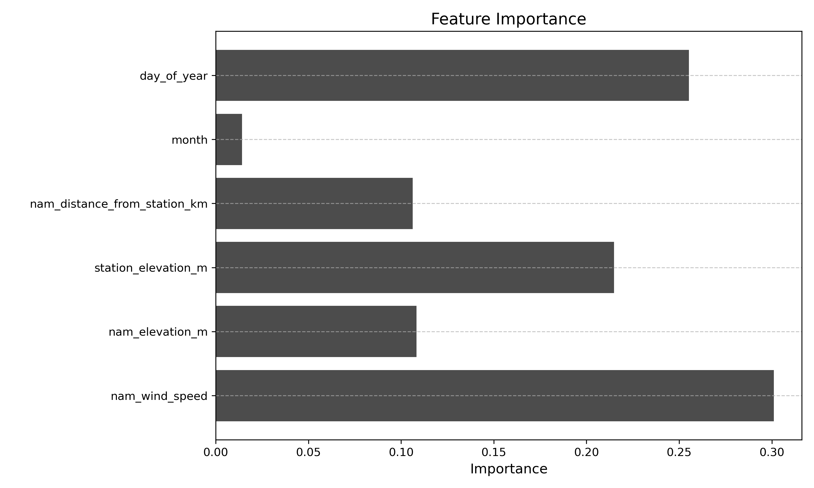

Recent wildfires, such as the Palisades Wildfire and the San Diego Border Wildfires, highlight the increasing threat of wildfires to communities, ecosystems, and infrastructure. These fires result from a combination of climate change and human activities, emphasizing the importance of accurate weather data—especially wind speed data—for wildfire risk assessment and mitigation.
Since 2007, SDG&E has installed weather stations to enhance wildfire prevention efforts. One key strategy is Public Safety Power Shutoffs (PSPS), where power is temporarily shut off during extreme weather conditions to reduce fire risk. PSPS decisions rely heavily on wind speed data collected from weather stations. Each station is linked to a Vegetation Risk Index (VRI) polygon, an area where the station’s readings are assumed to represent local wind conditions. These polygons are designed based on factors like topography, historical weather patterns, and vegetation density. However, in larger VRI polygons, wind speed conditions can vary significantly, potentially reducing the accuracy of wildfire risk assessments.
Our project aims to improve wind speed accuracy by identifying areas where wind speed measurements from local weather stations differ significantly from those predicted by the North American Mesoscale (NAM) model, a widely used weather forecasting system. Large discrepancies between NAM predictions and station data could indicate areas where wind estimates are unreliable, which may impact PSPS decisions.
To address these challenges, we use a machine learning approach with LightGBM to estimate wind speed discrepancies and refine VRI polygon boundaries. By analyzing the top 20 NAM points with the highest discrepancies within a polygon, we reassign them to the nearest alternative VRI polygon, helping to reduce wind speed errors. This process aims to create a more accurate representation of wind conditions, ensuring that PSPS is only implemented when truly necessary.
By refining VRI polygon boundaries and improving wind speed accuracy, our project provides a data-driven approach to wildfire risk assessment. These improvements help utilities like SDG&E make better-informed PSPS decisions, ultimately enhancing wildfire mitigation efforts and reducing risks for communities in fire-prone areas.
Our methodology consists of several steps to collect, process, and analyze wind speed data, identify discrepancies, and ensure the project is reproducible.
We gathered wind speed data from the North American Mesoscale (NAM) model by compiling it from SDG&E’s data repository. Weather station data is recorded daily, whereas NAM data is recorded hourly. To ensure comparability, we calculated the daily average wind speed from the NAM dataset. Additionally, we focused on dates when PSPS was under consideration, totaling 179 unique dates between 2012 and 2024.
Beyond wind speed data, we also collected elevation data for all weather station and NAM points. This was accomplished by using the Open-Elevation API, which provided elevation values based on the latitude and longitude of each point.
Since the NAM dataset covers the entire United States, we filtered the data to focus on SDG&E’s operational area. This was achieved by obtaining shapefiles for San Diego County and Southern Orange County, ensuring that only relevant geographic data was analyzed.
To prepare our data for analysis, we merged multiple datasets, ensuring that only relevant columns were included. This process involved combining weather station data, weather station wind speeds, NAM data, and VRI polygons to create a dataset containing only NAM points within VRI polygons. Additionally, we calculated the Haversine distance from each NAM point to its respective weather station, which serves as a key variable in our model. We also computed the absolute error between the wind speed observed by each NAM point and its corresponding weather station.
To estimate wind speed error in areas without weather stations, we trained a LightGBM model using NAM wind speed, NAM elevation, weather station elevation, distance to the station, month, and day of the year as features. The target variable is the absolute wind speed error. Since NAM points outside the VRI polygons lack direct station data, we assigned them values from the nearest weather station, assuming similar wind conditions.
Using a model rather than directly applying the nearest station’s wind speed allows us to account for spatial and environmental variations, especially in complex terrains. The inclusion of temporal features (month and day of year) helps capture seasonal and diurnal wind patterns, improving prediction accuracy and generalizability to regions without direct weather station measurements.
The first analysis identifies wind speed discrepancies of NAM points within the VRI polygons. Inside VRI polygons, we assess error distribution, compute the Mean Absolute Error (MAE), and analyze correlations between elevation, distance, and wind speed error. Spatial patterns are visualized using Folium maps to identify trends in the error.
The second analysis identifies wind speed discrepancies of NAM points outside the VRI polygons. We use LightGBM-predicted errors to evalute the Mean Absolute Error (MAE) of each NAM points and filter points with outlier error values to locate high-error regions. Manual polygon boundaries are drawn around these areas, and SDG&E assets within them are mapped to identify potential locations for additional wind speed data collection, enhancing overall prediction accuracy.
To improve wind speed accuracy, we used a Haversine distance-based approach to find the nearest VRI polygons for reassignment. Each NAM point was mapped to its current VRI polygon, and we identified the closest alternative polygons, excluding its original assignment. The points were reassigned to polygons with better wind speed accuracy. To measure the effectiveness, we compared the wind speed errors before and after reassignment, focusing on metrics like Mean Absolute Error (MAE) and error reduction. We also calculated the overall MAE decrease and percentage improvement in prediction accuracy.
The LightGBM model is trained using over 102,000 rows of NAM points within the VRI polygon, filtered by date, and split into 80% training and 20% testing sets. The model achieves a Mean Absolute Error (MAE) of 2.7 and an R2 score of 0.66. Feature importance analysis shows that NAM wind speed is the most significant factor, with a score of 0.3, followed by day of year and station elevation. The model is then used to predict the absolute error for over 600,000 NAM points outside the VRI polygons.
The Mean Absolute Error (MAE) of NAM points within the VRI polygon is right-skewed, with a central tendency around 10 mph and an outlier of 18.3 mph. A correlation analysis shows that elevation is more strongly correlated with MAE than distance. Several map visualizations were created to analyze NAM points based on different criteria, such as outlier values and the top points with the highest MAE. Observations indicate that NAM points in elongated VRI polygons tend to have higher MAE, and larger VRI polygons with high MAE generally show more errors in wind speed predictions. The correlation between MAE and polygon size is weakly negative overall, but for the top 20 polygons with the highest MAE, it turns positive, suggesting that larger polygons may have more discrepancies in NAM wind speed predictions.
NAM Points with Outlier MAE
NAM Points with Top 20 Highest Error
We analyzed the predicted Mean Absolute Error (MAE) for NAM points outside the VRI polygons, finding that station elevation has the strongest correlation (0.90), followed by NAM elevation (0.55) and distance to the nearest station (0.13). This confirms the significant role of elevation in wind speed errors. Several map visualizations were created to explore spatial trends, including NAM points with outlier MAE over the threshold value of 20.096 mph. We identified five clusters with high errors: Otay Mountains, Cleveland National Forest, CA 78, Sawtooth Mountains, and Monkey Hill. Only CA 78 and Sawtooth Mountains are relevant to SDG&E's operations, containing assets and customers.
| Boundary | Asset Count | Customer Count |
|---|---|---|
| CA 78 | 459 | 232 |
| Sawtooth Mountains | 401 | 118 |
NAM Points Outside VRI Polygon
Outlier NAM Points with Boundaries
The reassignment of NAM points to the nearest VRI polygon led to a significant reduction in wind speed errors for 18/20 of the top NAM points with the highest MAE errors. The MAE for these points decreased from 25.76 mph to 11.68 mph, an improvement of 14.07 mph, with an overall percentage decrease of 54.64%. The reassignment improved prediction accuracy by reallocating NAM points to alternative VRI polygons with better wind speed characteristics. The table below summarizes the error reductions:
| Metric | Before Reassignment | After Reassignment | Improvement |
|---|---|---|---|
| Mean MAE Wind Speed (mph) | 25.78 | 11.68 | 14.07 |
| Overall Percentage Decrease (%) | - | - | 54.64% |
This project analyzes wind speed discrepancies related to NAM points, VRI polygons, and weather stations, highlighting challenges like biases in wind speed data distribution and gaps in smaller VRI polygons. By expanding the dataset and using statistical weighting, the accuracy of wind speed predictions could improve. Additionally, the project proposes representing wind speed errors on a grid-based system, addressing limitations posed by individual NAM points. Manual boundaries were drawn for identifying clusters of high-error NAM points, as K-means clustering did not capture the irregular error distribution or geographical constraints. The VRI polygon optimization process focuses on improving NAM point assignments rather than reshaping boundaries, offering valuable insights for SDG&E decision-makers. Future iterations of this project will enhance wind speed data accuracy, aiding SDG&E in better PSPS decision-making, resource allocation, and wildfire risk mitigation to strengthen grid reliability and safety.
This project demonstrates the potential of optimizing VRI polygon assignments to significantly improve wind speed prediction accuracy, which can support SDG&E’s infrastructure development and wildfire mitigation efforts. Our findings highlight how targeted reassignment of NAM points based on wind speed characteristics can reduce mean absolute error by over 50%, making a notable impact on grid reliability. Looking forward, expanding the dataset, incorporating more weather variables, and refining reassignment methodologies could further enhance the analysis, strengthening SDG&E’s ability to address wildfire risks and improve infrastructure resilience.